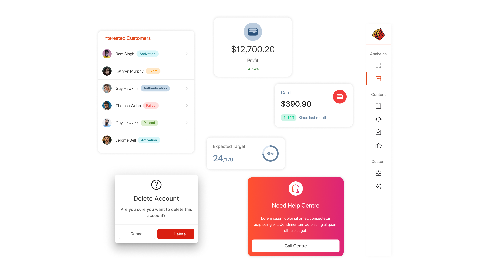
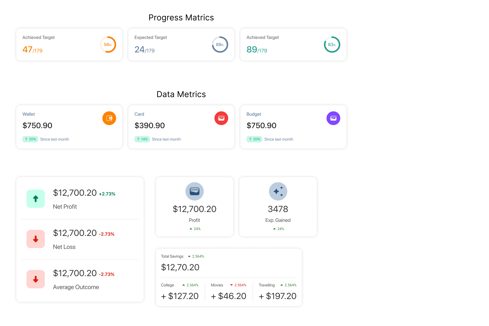
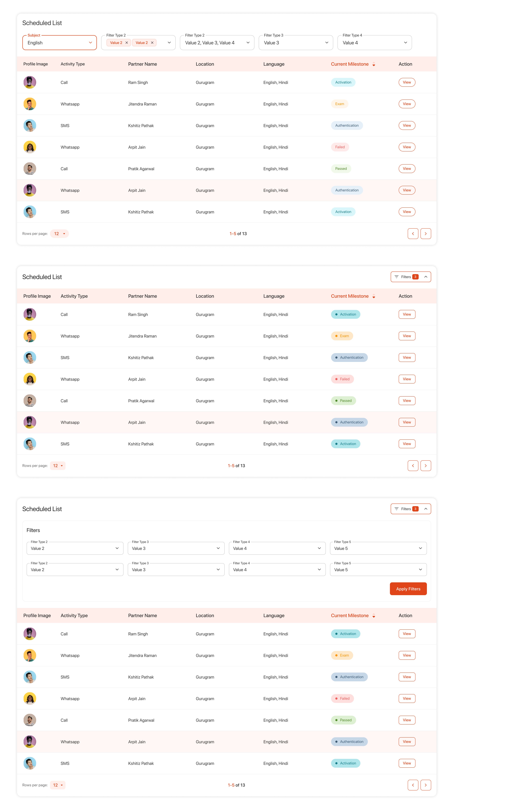
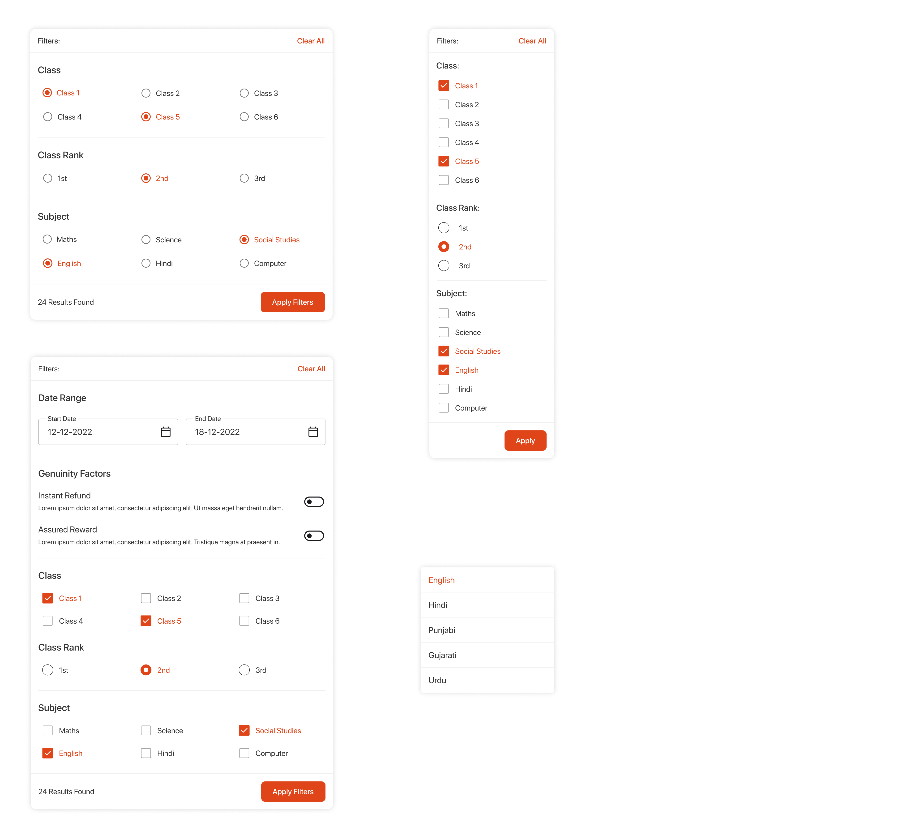
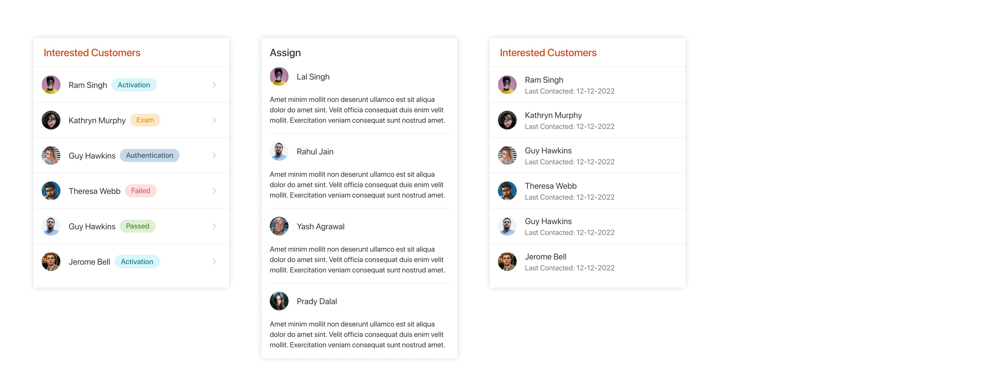
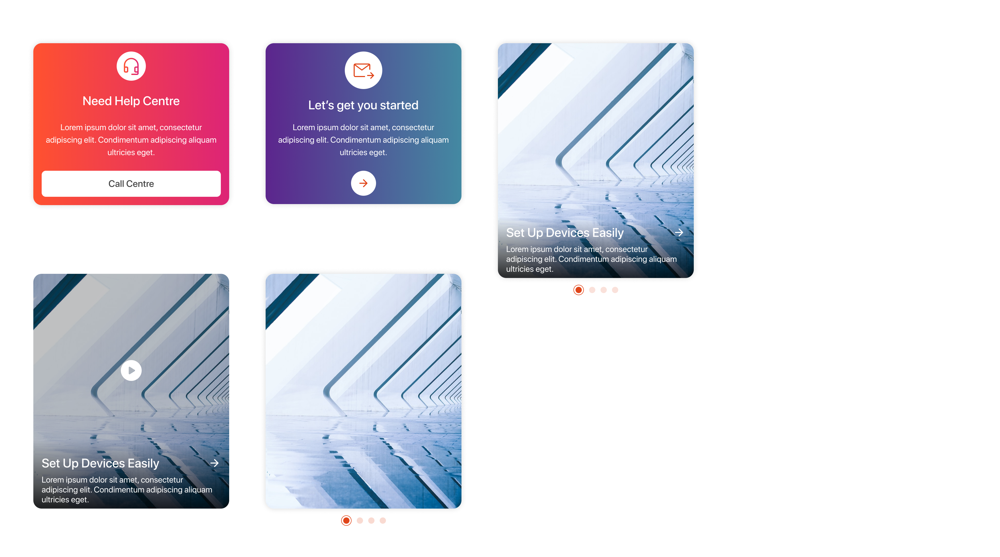
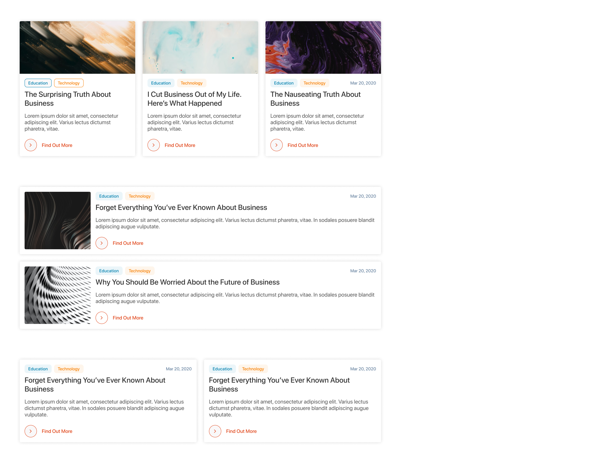

TARP Design System
TARP Component Library was designed as a part of startup to create aglie software in Permute Solutions Pvt. Ltd. Few components are shown below to demonstrate the UI perspective of TARP. Tarp uses the grid system to create complete pages design, so all the components are created accordingly.
Problem Statement
In a rapidly evolving digital landscape, organizations face challenges in maintaining visual consistency and user experience across multiple platforms and products. Existing design processes often lead to fragmented design elements, inefficient collaboration, and a lack of accessibility for both designers and developers. TARP aims to address these issues by providing a comprehensive design system that encompasses a cohesive set of guidelines, components, and best practices tailored for scalability and flexibility. By streamlining workflows and ensuring consistency in design and branding, TARP empowers teams to create intuitive, user-friendly interfaces that enhance overall user engagement and satisfaction.
UX Researcher,
Duration
July/22 - Jan/23 (4 Months)
Flows and UI Designs
Matrics
Metric is quantitative data that you collect & analyze and, hopefully, make better decisions based on this analysis.
Data Table
Data tables display information in a grid-like format of rows and columns. They organize information in a way that's easy to scan so that users can look for patterns and develop insights from data.
Side Navigation
Side navigation lets users navigate the entire content of a product or a section. These can be used for a single level or a multi-level navigation.

Filters
Filters provide a set of controls to reduce items in a collection based on attributes the user is interested in (e.g., filtering items by creation date). Filters can provide the following functionality: A list of interesting attributes common to items in a collection, and possible values to filter by.
List
Lists in web/mobile app UI design are galleries of text, images, or card options that can help users choose one or more options to achieve their goals effortlessly. Many common elements such as drop-down menus, list boxes, checkboxes, and radio button groups are typical examples of list UI design.
Promotion/Helper Box
Promotion/Helper box is a container wher the promotional things are graphically represented. It can also be used to show the helping things that eases the ux.
Articles
Aritcle page is the collection of article of similar type, segregated by categories.
UI Pages
Following pages were designed using the above components.

Made with ❤️ by Sumit.